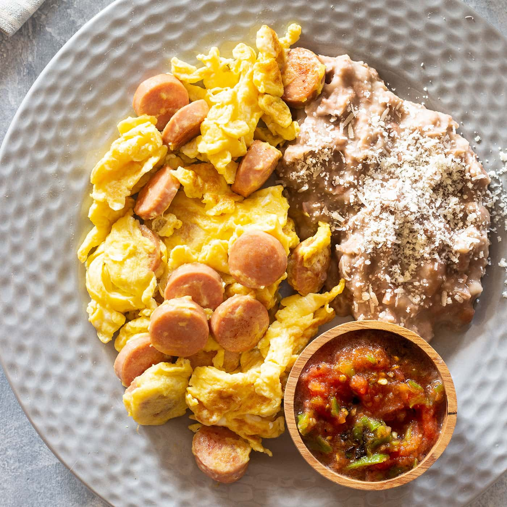

Home
Huevito con salchicha

Description
Huevito con salchicha a classic Mexican comfort food. It consists in
scramble eggs with sliced susage. Oftern served with warm tortillas, beans,
and salsa.
Ingredients
- 3 Eggs
- 2 Sausages
- Oil or butter
- Beans (optional)
Steps
Slice the sausage
- Cut the salchicha into thin rounds.
Heat the pan
- Add a little oil or butter to a pan over medium heat.
Cook the susage
- Add the sausage and cook for 2-3 minutes until lightly
browned.
Add the eggs
- Crack the eggs directly into the pan (or beat them first in a bowl).
- Add a pinch of salt and pepper.
Scramble
- Gently stir until the eggs are fully cooked but still soft.
Serve
- Serve hot with tortillas, beans and salsa.